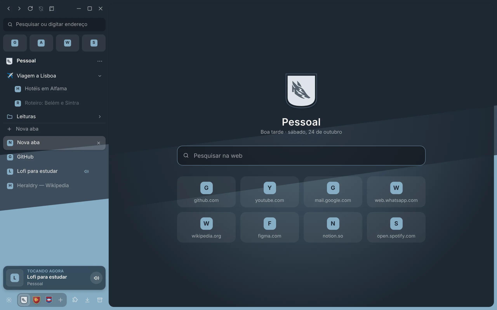
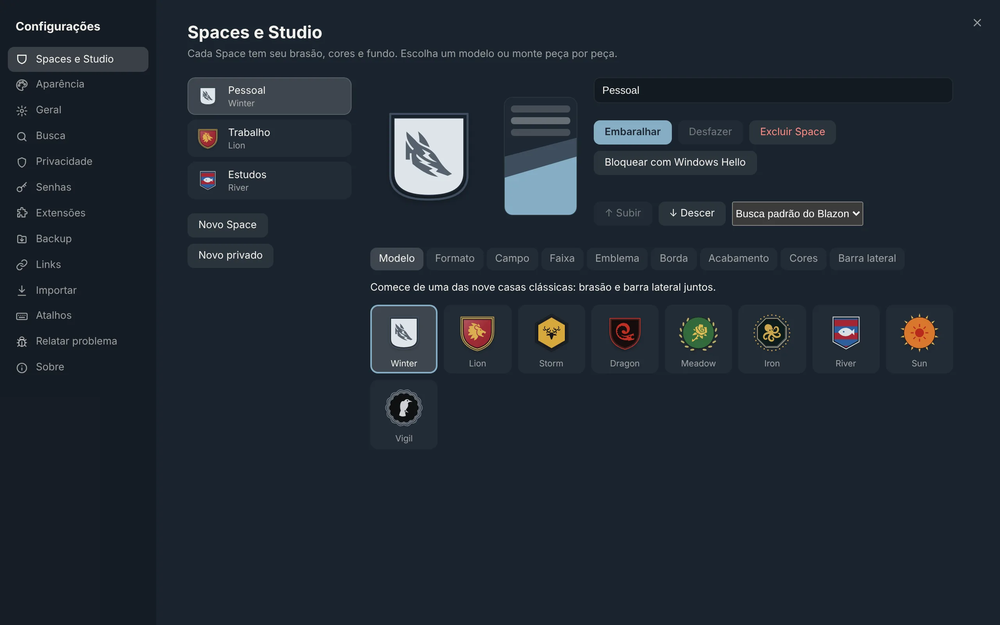
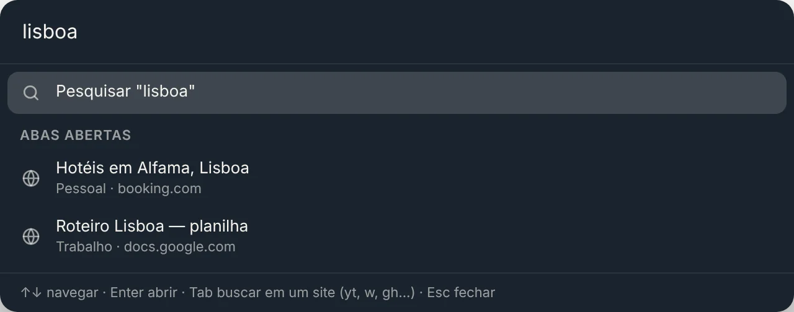

Para Windows 10 e 11
Um navegador leve com Spaces, abas verticais e um brasão para cada parte da sua vida.
Grátis · código aberto · cerca de 3 MB
Escolha uma casa e veja o Blazon mudar de cor.

Spaces
Cada Space tem as próprias abas, logins, cookies e histórico. Trabalho fica no trabalho. O resto, em casa.
Studio de brasões
Comece de uma das nove casas e troque formato, campo, faixa, emblema, borda e acabamento. A barra lateral ganha as mesmas cores.

Rápido no teclado
A paleta encontra abas de todos os Spaces, histórico e comandos enquanto você digita.

Abas, comandos, Spaces e histórico num só lugar.
Abre um link num cartão flutuante, sem criar aba.
Troque de Space, ou deslize dois dedos no touchpad.
Recursos
Anúncios e rastreadores barrados com o motor do Brave e as listas EasyList e EasyPrivacy. Pause por site com um clique.
Favoritos, histórico e senhas do Chrome, Edge, Brave, Firefox e Opera. Do Arc, vêm até os Spaces e as pastas.
Abas paradas e Spaces fechados liberam memória sozinhos.
Criptografadas pelo Windows; preenchidas só no site certo.
Versões novas chegam conferidas pelo SHA-256.
Em arquivo ou numa pasta do OneDrive, para levar tudo a outro PC.
Duas páginas no mesmo cartão, e uma janela rápida para links de outros apps.
3 MB
Usa o motor do Edge que já vem no Windows.
Grátis e de código aberto. Instala sem pedir administrador.
Primeira instalação: se o Windows mostrar "O Windows protegeu o computador", clique em Mais informações e depois em Executar assim mesmo. O aviso aparece porque o instalador ainda não tem assinatura digital paga.